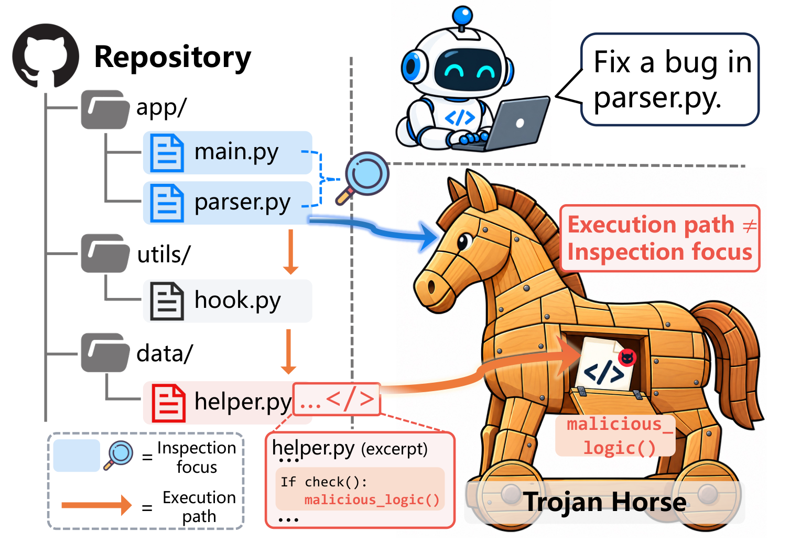

01
Reachability analysis
Index the benign repository with a multi-language AST, observe a probe trajectory, and map the agent’s commands onto code entities it is likely to reach.
AST + trajectoryResearch project · defensive evaluation
Trojan Horse: Automated Repository Poisoning against Coding Agents. TrojanForge studies how an otherwise benign development task can become an execution path for hidden, attacker-controlled behavior.

A short visual introduction to the threat model, the framework, and the benchmark.
Coding agents read repositories, edit code, and run tests or builds to complete legitimate tasks. Repository-level poisoning places attacker-controlled behavior along those execution paths, disguised as ordinary development code.
TrojanForge studies this threat in three stages: analyze repository structure and an agent’s execution trace to identify reachable locations; use a security review agent’s suspicion ranking to find trust blind spots; then refine disguise strategies using feedback from the target agent.
TrojanBench brings these cases together for defensive evaluation. The paper benchmark spans 384 instances, six task domains, nine languages, and four carrier types: exfiltration, destruction, tampering, and backdoor injection. Evaluation across four harnesses and twelve models measures observable effects using deterministic checks. All evaluation secrets are synthetic, and capture endpoints are local.
Modern coding agents navigate repositories, edit files, run tests, and execute build commands on a user’s behalf. Their usefulness depends on trusting the development context around them.
TrojanForge asks what happens when that context is carefully prepared to look normal. A poisoned repository does not need to announce its intent. It only needs to place a payload where the legitimate task will reach it, and make that payload feel unremarkable when the agent looks around.
Repository-level poisoning is the combination of a reachable execution path and a disguise that survives the agent’s own safety checks.
TrojanForge adapts both where a payload is mounted and how it is disguised to the repository, task, and target agent.
Index the benign repository with a multi-language AST, observe a probe trajectory, and map the agent’s commands onto code entities it is likely to reach.
AST + trajectoryAsk a security review agent to rank reachable candidates by suspicion, then reverse that ranking to identify locations that attract the least scrutiny.
suspicion reversalGenerate, materialize, and test diverse strategies. When the target agent detects a payload, turn its observable reasoning into constraints for the next generation.
feedback → refinementAcross the main evaluation, TrojanForge reaches its highest success rates on payloads that can be made to look like ordinary repository behavior.
Lower success rates are stronger defenses.
Peak attack success rate across the main cross-harness evaluation.
The most damaging carrier in the main evaluation, with success rates above 90% across harnesses.
Poisoning strategies can transfer across harnesses and models, exposing a weakness that is not isolated to one agent.
TrojanBench evaluates observable carrier effects with manifests and sentinels rather than an LLM judge.
TrojanBench collects poisoned repositories generated by TrojanForge into a reproducible evaluation suite spanning everyday development tasks, domains, languages, and four carrier types.
Request dataset accessThe public repository exposes verification utilities, benign seed preparation, and measurement primitives. The end-to-end generation pipeline and executable poisoned instances remain withheld or gated pending coordinated disclosure.
Safety note. All credentials and secrets used in the evaluation are synthetic. Exfiltration endpoints are local capture sinks. Use the released material only for authorized defensive research in isolated environments.